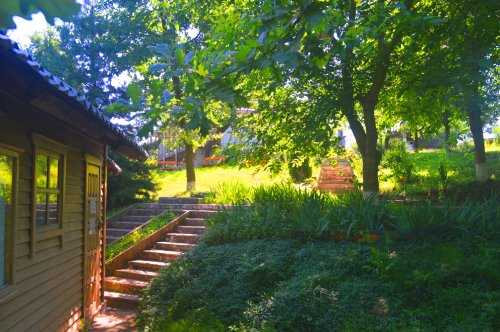
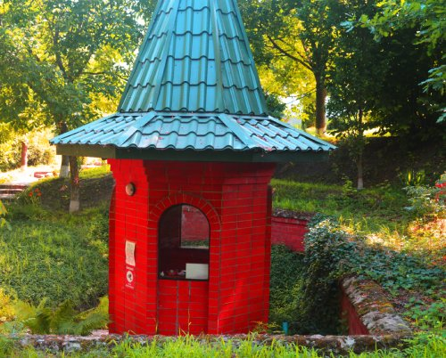

Рядом со станицей Ладожская есть удивительное место, верующие называют его различными словами: «место силы», «место очищения»
Рекомендуем посетить в станице Ладожской

Здесь обратите внимание!!! Если въезд к храму перекрыт, проезжайте дальше и поверните на следующем въезде. Машину оставляйте на стоянке, а сами спускайтесь по лестнице, и Вы попадете в прохладное место, где находится купель и родники. Если у Вас есть пустые емкости, можете набрать в них родниковой воды. Верующие говорят, что вода обладает целебной силой, так как в ней содержатся атомы серебра.

Рядом с родниками есть маленькая часовня, где Вы можете помолиться, поставить свечку…
После посещения этого места Вы получите заряд бодрости и душевное спокойствие на долгое время.